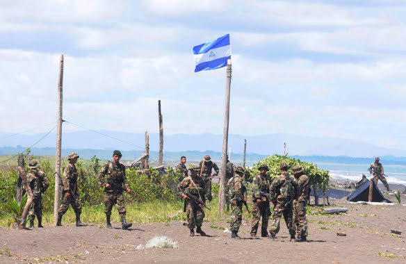
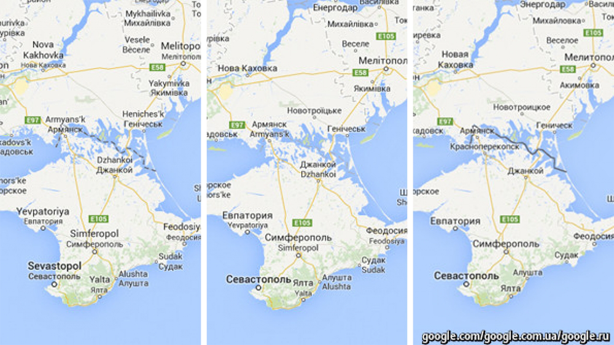
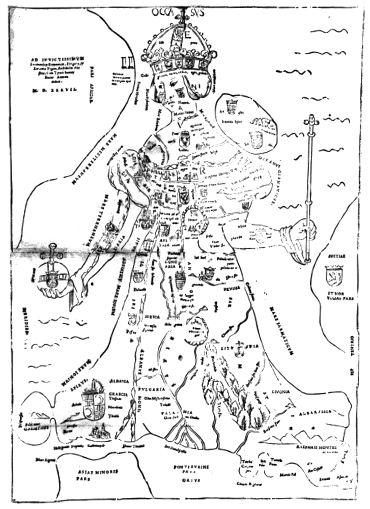
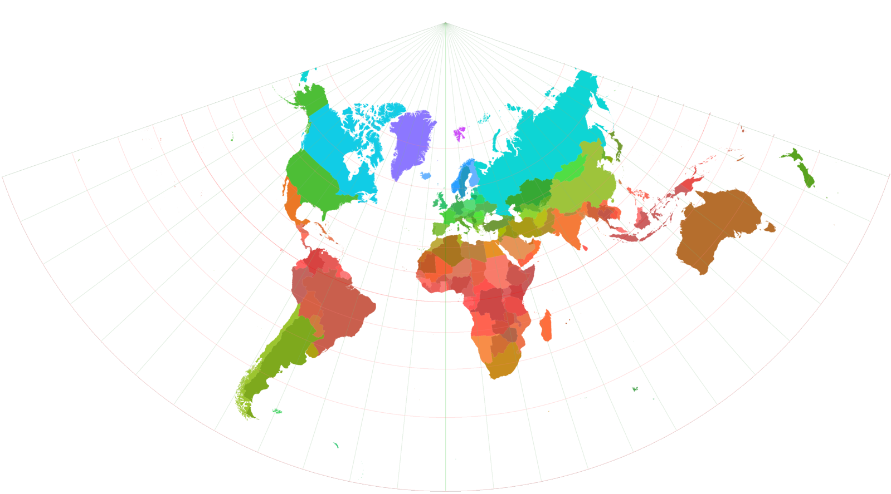

Vooringenomen Cartografie
↪Leeswijzer ↪1.Inleiding ↪1.Vooringenomen kaarten ↪2.Soorten cartografen ↪2.1 Technologische ontwikkelingen ↪2.2 Verschillende kaartenmakers ↪2.2.1 De cartograaf ↪2.2.2 De (moderne) kaartenmaker ↪2.2.3 De grafisch ontwerper ↪2.3 Dynamische Informatiemaatschappij ↪3.Critique ↪3.1 Critique ↪3.2 Een cartografische critique ↪3.3 Critique leveren ↪4.Conclusie ↪5.Bijlage ↪6.Bibliografie
Vooringenomen cartografie
Thijmen van Brunschot, Bachelor Grafische Ontwerp Thesis. Koninklijke Academie van Beeldende Kunsten Den Haag. 2018
Leeswijzer
In hoofdstuk 1 wordt in kaart gebracht welke grafische keuzes cartografen maken en hoe deze keuzes lezers kunnen beïnvloeden, door een aantal kaarten te analyseren. Dit gebeurt aan de hand van de voornaamste (grafische) elementen: projecties, kleuren, kleurencombinaties, tekst, beelden, symbolen, posturen en accessoires. In hoofdstuk 2 wordt beschreven wie cartografische keuzes maken en hoe deze keuzes worden gemaakt. Dit wordt gedaan aan de hand van een kort overzicht van cartografische (technologische) ontwikkelingen. In hoofdstuk 3 komt aan bod hoe cartografen en kaartenmakers beter en bewuster cartografische keuzes kunnen maken. In hoofdstuk 4 volgt de conclusie. Hier wordt antwoord gegeven op de hoofdvragen. Vervolgens worden er aanbevelingen gedaan.
Inleiding
Geografische kaarten zijn voor veel mensen simpelweg een objectieve weergave van de werkelijkheid. Schijn bedriegt. Kaarten zijn inherent politiek en altijd verbonden met macht.
 Nicaraguan troops planted a flag on Costa Rica's Calero Island [foto]. (z.j.). Geraadpleegd van http://www.telegraph.co.uk/Begin november 2010 had Nicaraguaans ambtenaar Edén Pastora de taak een deel van de rivier Rio San Juan droog te baggeren. Het droog te leggen gebied grensde aan het buurland Costa Rica. Om te zien waar de landgrens liep, gebruikte Pastora Google Maps: “See Google’s satellite photo, and there you see the border.”
Internationale omroepen zoals The New York Times en The Guardian beschreven dat een fout van Google Maps leidde tot een escalerende situatie, een Nicaraguaanse invasie in Costa Rica en een eerste ‘Google Maps Oorlog’.
James. (2011, 4 april). Here’s a before and after [beeld compilatie]. Geraadpleegd van http://maptd.com/Later bleek dat de online atlas de landgrenzen enkele kilometers verkeerd aangaf, en dat ze ten dele op Costa Ricaans grondgebied bezig waren. De situatie tussen Nicaragua en Costa Rica was al gespannen; de kaartkeuze van E. Pastora verhitte het politiek conflict.
In aardrijkskundige kaarten zit veel macht verstopt. De neiging van de mens om de kaart te zien als een neutrale, wetenschappelijke weergave van de werkelijkheid, zorgt er voor dat kaarten eenvoudig misbruikt kunnen worden voor nationalistische en propagandistische doeleinden.
Cartografie is een werkveld waar keuzes gemaakt worden. Wanneer cartografen keuzes maken, beïnvloeden ze de interpretatie van de kaart, en hierdoor kunnen meningen en dus standpunten en overtuigingen van lezers beïnvloed worden. Dit kan ernstige gevolgen kan hebben.
De situatie tussen Nicaragua and Costa Rica liep gelukkig met een sisser af. Dit voorbeeld laat duidelijk zien dat kaartenmakers en organisaties die kaarten aanbieden, de nodige verantwoordelijkheid hebben. Het publiek neemt officiële en officieuze informatie snel voor waar aan. De lezer positioneert hierdoor kwetsbaar en dus beïnvloedbaar.
 The Economist. (2014, 4 september). How Google represents disputed borders between countries [beeld compilatie]. Geraadpleegd van https://www.economist.com/Geografische kaarten die zoekmachines zoals Google, Bing en Yahoo hanteren, hebben verschillende politieke en nationale belangen. Het politieke spektakel tussen Nicaragua en Costa Rica ontstond doordat Google de grens verkeerd aangaf, en daarop gebaseerd keuzes zijn gemaakt. Anderzijds kunnen zulke organisaties ook voor keuzes worden gezet door de verschillende perspectieven over territoriale disputen. Een voorbeeld hiervan is het schiereiland De Krim, dat zowel door Rusland als Oekraïne wordt geclaimd. Google werd genoodzaakt De Krim in Rusland als Russische grondgebied te vertonen.
Deze scriptie gaat over vooringenomen cartografie en de effecten die keuzes van cartografen hebben op de interpretatie van lezers. Er wordt gezocht naar antwoorden op de onderzoeksvragen: ‘Welke grafische keuzes maken cartografen (bewust of onbewust)?’, ‘Wat kunnen deze keuzes voor nadelige effecten hebben?’ en ‘Kunnen cartografen daar iets tegen doen?’. Om deze onderzoeksvragen te beantwoorden is literatuur onderzoek gedaan en zijn verschillende aardrijkskundige kaarten onderzocht (case studies).
Soorten cartografen
Om antwoord te kunnen geven op de eerste hoofdvraag, wordt in dit hoofdstuk in kaart gebracht welke grafische keuzes cartografen maken door een aantal kaarten te analyseren. Dit gebeurt aan de hand van de voornaamste (grafische) elementen: projecties, kleuren, kleurencombinaties, tekst, beelden, symbolen, posturen en accessoires. Daarnaast wordt er ook gekeken naar de positie van de maker en de bronvermelding. Ook is er aandacht voor interne psychologische processen die de interpretatie van kaarten beïnvloeden bij de lezer.
Voordat een kaart gemaakt kan worden, moet een projectie worden gekozen. Projecties zijn wiskundige berekeningen die breedte- en lengtegraden van, in dit geval het bolvormig object de aarde, berekenen naar een rechthoekig oppervlakte, de kaart. Een kaart wordt door de Van Dale beschreven als “blad met een schematische, verkleinde voorstelling van de aarde of een deel daarvan, van een zee met haar ondiepten, stromingen enz of van de hemel, hetzij als blad op zichzelf of als deel van een boek met kaarten, een atlas (bij steden spreekt men gewoonlijk van een plattegrond).”
Er zijn verschillende wiskundige manieren om deze projecties te berekenen. Omdat de aarde geen perfect bolvorm heeft, is het wiskundig gezien onmogelijk om deze te berekenen naar een tweedimensionaal oppervlakte. Een cartograaf kiest welke ‘vervormde' weergave hij gebruikt voor zijn kaart. De projectiekeuze is een eerste voorbeeld van een cartografische keuze. Projecties verschillen wat betreft objectiviteit, vooringenomenheid, afstandsgetrouwheid, relatieve grootte en hoeksgetrouwheid (zie Bijlage 1 voor meer informatie).
Mulcahy & Clarke beschreven in 2001 dat de projectiekeuze tegenwoordig dilemmas meebrengt. “Democratization of the access and use of spatial data has brought the projection issue to the forefront because important decisions are often based upon spatial information.”
Future Caliphate Imagined
 Future Caliphate Imagined by Hizb ut-Tahrir [propaganda kaart]. (z.j.). Geraadpleegd van http://www.geocurrents.info/
Future Caliphate Imagined by Hizb ut-Tahrir [propaganda kaart]. (z.j.). Geraadpleegd van http://www.geocurrents.info/
De internationale islamitische organisatie Hizb ut-Tahrir heeft deze kaart gemaakt en geeft hun waarneming van de wereld weer. De kaart gaat op internet gepaard met een beschrijvende tekst dat de wereld verdeeld is in ‘het land van ongelovige’ (Dar Al-Kufr) en het ‘land van de Islam’ (Dar al-Islam). De organisatie beweerde dat de hele wereld onder ‘het land van ongelovige’ valt, omdat geen enkel land aan criteria voor een islamitische staat voldoet. Op internet zijn verschillende weergaves van utopische kalifaten te vinden. Bij veel van zulke kaarten wordt het kalifaat zwart gemarkeerd. Dat maakt het opmerkelijk dat bij deze kaart gekozen is om de kleur blauw te gebruiken voor de markering van het kalifaat en zwart voor de overige landen (het land van ongelovige).
De kleurwaarden van blauw en zwart verschillen behoorlijk. Zwart wordt in het westen geassocieerd met mysterie, ongeluk, ziekte, droefheid en dood. Blauw heeft daarentegen associaties met stabiliteit, vertrouwen, loyaliteit en wijsheid. R. Holmes schrijft dat blauw vanwege vroegere schaarste associaties met goddelijkheid en de rijken heeft. Blauw wordt door veel culturen geassocieerd met hoge kwaliteit en geloofwaardigheid. Anderzijds verschillen associaties met blauw. In China is blauw symbool voor onsterfelijkheid. In westerse landen staat blauw symbool voor geloof en is het stereotype mannelijk. De expressieve waarden van blauw is dat het koud aanvoelt, altijd passief is en introvert werkt. Omdat de meeste mensen bekend zijn met het begrip kalifaat, begrijpen ze welk gebied het kalifaat weergeeft, ondanks dat er een andere kleur wordt gebruikt dan gebruikelijk is. Het is de vraag hoe de kaart geïnterpreteerd zou worden als de context onbekend is? Zou het beeld dat mensen hebben van het begrip kalifaat veranderen door de kleur blauw te gebruiken die geassocieerd wordt met geloofwaardigheid en stabiliteit.
Omdat er op deze kaart geen informatie staat over landsgrenzen, plaatsnamen en lengte- en breedtegraden is deze kaart niet bruikbaar als instrument voor navigatie. De kaart geeft de utopische visie van Hizb ut-Tahrir's kalifaat weer. Hierdoor wordt de suggestie gewekt dat deze kaart propagandistische doeleinden heeft.
The Octopus Repressing The British Empire
The Octopus Representing the British Empire [Nazi propaganda kaart]. (z.j.). Origineel formaat: 9.8 x 16.9 cmOp de kaart ‘The Octopus Repressing The British Empire’ wordt een octopus weergegeven die land- en plaatsnamen in zijn tentakels vasthoudt. J. A. Tyner stelt in 2015 dat elementen op vooringenomen kaarten vaak eenvoudig te interpreteren zijn en dat juist deze individual point symbols subjectieve kaarten van objectieve kaarten doet onderscheiden. Daarnaast wordt beschreven dat suggestieve symbolen — zoals een schaduw of omcirkeling — bedreigende situaties aangeven zoals een schaduw van het fascisme of een omcirkeling van land door haar vijanden. Symbolen als octopussen, haaien of tanks werden vanaf 1870 voor het eerst gebruikt op kaarten. Naast deze statische symbolen werden er ook dynamische symbolen, zoals ontploffingen en pijlen gebruikt. Dynamische symbolen sturen directer aan op beweging of actie en werden daarom veel gebruikt op subjectieve kaarten in de twintigste eeuw.
Zoals de titel hint, werd het Britse Koninkrijk in 1942 door Nazi’s op deze kaart verbeeld als octopus, die met zijn tentakels zijn koloniale gebieden vasthoudt. De propaganda van de Duitsers kaatst tegenlicht op hun vijand door hun koloniale gebieden te bekritiseren. Omdat de kaart alleen Britse koloniale gebieden laat zien en geen Duitse, heeft de kaart een eenzijdige boodschap over de destijdse geopolitieke situatie.
Leo Belgicus

 Famiano, S. (1648). Novus XVII. Inferioris Germaniæ Provinciarum [Kaart]. Geraadpleegd van https://digital.library.cornell.edu
Famiano, S. (1648). Novus XVII. Inferioris Germaniæ Provinciarum [Kaart]. Geraadpleegd van https://digital.library.cornell.edu
Naast symbolen worden op kaarten ook dieren, planten en mensen gebruikt in de vorm van een gebied om de boodschap van de kaart te versterken. Op de kaart Leo Belgicus wordt het lichaam van een leeuw gebruikt om de lage landen te verbeelden. De leeuw werd door cartografen in verschillende houdingen en gelaatsuitdrukkingen, meestal brullend en zittend, afgebeeld. De eerste Leo Belgicus is geproduceerd door Michael Eitzinger in 1583 ten tijden van de Tachtigjarige Oorlog.
Van der Heijden beschrijft in zijn boek ‘Leo Belgicus. An illustrated and annotated carto-bibliography’ dat op alle versies van kaarten de positie van de leeuw iets verschilt. Zo verandert bijvoorbeeld zijn kijkrichting, zijn houding en de positie van zijn kop. Van der Heijden stelt dat de houdingen van de leeuwen verschillende momenten en visies van dit conflict weergeven. Op één van de kaarten heeft de leeuw met zijn linkerpoot een zwaard-achtig wapen vast. Volgens van der Heijden staat dit voor het Spaanse gevaar dat uit Zuid-Nederland en later Frankrijk kwam. De zittende rustende leeuw beeldt bijvoorbeeld uit dat buurlanden gelijkgezind zijn en dat vrede heerst. De leeuw hoeft niet in actie te komen.
Daarnaast stelde van der Heijden dat het papierformaat ook een belangrijke keuze is voor deze kaart. Sinds de zestiende en begin zeventiende eeuw werden kaarten onder andere gedrukt op het goedkopere en handzamere papierformaat Folio, waardoor kaarten in aanraking kwamen met een groter publiek. De kaart werd gebruikt om nationale waarden door te geven en historisch en politiek bewustzijn te stimuleren. Toen de Nederlandse Republiek werd gesticht werd, kreeg de leeuw kracht, heerschappij en onafhankelijkheid als betekenis.
Europa Regina
 Johannes, P. (1537, originele Parijse editie). Europa Regina [Kaart]. Geraadpleegd van http://journals.openedition.orgDe originele Parijse versie van Europa Regina dateert uit 1537 en is gemaakt door Johannes Putsch. De kaart behoort tot de antropomorfische kaarten. Er wordt hier een menselijk figuur gebruikt voor de afbakening van territorium. De kaart verbeeldt het continent Europa zoals we dat nu kennen, maar dan een kwartslag naar rechts gedraaid. Europa is afgebeeld in de vorm van een koningin. Verschillende Europese landen hebben hun eigen plek in en om haar lichaam. Op de kaart houdt Denemarken een schepter vast en houdt Sicilie een keizerlijke orb vast. Beide accessoires zijn bekende machtssymbolen en worden gezien als objecten die ‘de wereld bezitten’. Haar houding en de posities van omringende landen zijn expressief.
Peter Meurer beschreef in zijn artikel ‘Europa Regina 16th century maps of Europe in the form of a queen’ dat de kaart refereert aan het gedicht ‘Europa lamentans’, geschreven door Putsch. Dit gedicht gaat over een rouwend Europa dat Charles V en Ferdinand I aanspreekt. De vrouwelijke stem in het gedicht beklaagt zich over haar onzekere toekomst en dat van de aarde. Haar beklag komt overeen met Ceasars campagne ‘Civil War’ uit 49-45 v. Chr. tegen zijn eigen volk. Het gedicht eindigt met een angstige kreet waar zij (Europa) alleen eindigt als vrouwelijk offer aan de Tartaren en Turken. Tegelijk wordt zij geplaagd door Engeland en is alleen Duitsland bewapend tegen de vijanden. Dit onderbouwt waarom de omringende landen zo zijn afgebeeld. Zo zijn de Britse eilanden weergegeven als gigantische landmassa’s die haar schouder en hoofd bedreigen. Op de borst van de koningin, Duits grondgebied, staat een schild afgebeeld voor sterke verdediging. Met deze kaart verheerlijkte Putsch Het Huis Habsburg, dat destijds een belangrijk Europees vorstengeslacht was. PJ Mode van de PJ Mode Collection is van mening dat de meeste versies van ‘Europa Regina’ niet persuasive zijn met uitzondering van deze versie. Hij zegt dat deze kaart: “… may be at least in part intended to influence opinions or beliefs” (persoonlijke communicatie, 1 september 2017).
Imperial Federation Map of the World

 Crane, W. (1886). Imperial Federation Map of the World [Kaart]. Geraadpleegd van https://digital.library.cornell.edu/
Crane, W. (1886). Imperial Federation Map of the World [Kaart]. Geraadpleegd van https://digital.library.cornell.edu/
De ‘Imperial Federation Map of the World’ bevat net als de ‘Europa Regina’ partijdig beeldgebruik en daardoor een vooringenomen narratief. Deze kaart uit 1886 werd voor het eerst gepubliceerd tijdens een koloniale en Indische tentoonstelling. Op deze kaart zie je een weergave van de wereld. Aan de randen van de kaart staan verschillende figuren en symbolen afgebeeld. Deze figuren en symbolen beelden het Britse Koninkrijk met al haar rijkdom en industriële ontwikkeling uit. Aan de hand van statistieken wordt bijvoorbeeld de infrastructuur van Britse handel- en zeeroutes getoond. Alleen de Britse kolonies worden met een kleur, rood, gemarkeerd. Op de kaart staat ook een kleine wereldbol weergegeven waarop een persoon zit met een Brits schild en een staf in zijn hand. Alle overige figuren kijken in zijn richting. Dit beeldgebruik in combinatie met kleurgebruik en informatie over bijvoorbeeld handelsroutes geven de visie van de cartograaf weer; het Britse Koninkrijk is wereldheerser.
De gekozen projectie onderbouwt dit standpunt. Het Britse Koninkrijk wordt groots vertoond doordat er gebruik wordt gemaakt van de Mercator projectie. Bij dit soort cilinder projecties zijn de meridianen en parallellen zichtbaar op een eenvoudig rechthoekig raster. Deze projectie heeft rond de evenaar weinig vervorming, maar geeft de noord- en zuidpool groter weer dan ze werkelijk zijn. Hierdoor vallen westerse landen verhoudingsgewijs groter uit. In Bijlage 1 vindt u meer informatie over projecties.
Angling in Troubled Waters: A Serio-Comic Map of Europe

 Rose, Frederick W. (1899). Angling in Troubled Waters: A Serio-Comic Map of Europe [Kaart]. Geraadpleegd van https://digital.library.cornell.edu/
Rose, Frederick W. (1899). Angling in Troubled Waters: A Serio-Comic Map of Europe [Kaart]. Geraadpleegd van https://digital.library.cornell.edu/
De kaart ‘Angling in Troubled Waters’ is geproduceerd door Frederick W. Rose in 1899. Deze kaart beschrijft door het gebruik van karikatuur een onrustig internationaal politiek klimaat. Suggestief beeldgebruik wordt ingezet om de boodschap van de cartograaf te visualiseren. Landen zijn afgebeeld als vissers die proberen hun territorium te vergroten door kleine vissen (landen) binnen te halen. Sommige landen hebben meer moeite dan andere landen met het vangen van vis. Zo worstelt Frankrijk op land met Dreyfus waardoor de vis (Fashoda) ontsnapt. Op de kaart staan ook gebaren zoals het afpakken van een kroon. Dit zijn voorbeelden van suggestieve reflecties van het politieke klimaat.
Ook de tekst de suggestie dat er onrust in Europa heerst. De titel ‘Angling in Troubled Waters’ vertaalt zich als ‘Hengelen in Onrustige Wateren’. Het gebruik van het woord ‘troubled’ geeft aan dat er volgens de cartograaf reuring heerst. Nederland wordt afgebeeld als een jonge Koningin. In de tekst op de kaart wordt haar voorspoed gewenst. Dit zijn tekstelementen die de visie van de cartograaf verwoorden.
American Bases In the World

 Parti Communiste Francais [Communist Party of France]. (1951). Voici les Bases Americaines dans le Monde: Que est l'agresseur? Qui Menace? (Here Are the American Bases Throughout the World: Who is the Aggressor? Who the Threat?)[Poster]. Geraadpleegd van https://digital.library.cornell.edu/
Parti Communiste Francais [Communist Party of France]. (1951). Voici les Bases Americaines dans le Monde: Que est l'agresseur? Qui Menace? (Here Are the American Bases Throughout the World: Who is the Aggressor? Who the Threat?)[Poster]. Geraadpleegd van https://digital.library.cornell.edu/
‘American Bases In the World’ is een affiche geproduceerd door de Communistische Partij van Frankrijk in 1951, waarbij tekst een zeer sturende rol heeft. Op de poster staan teksten als: ‘Hier zijn de Amerikaanse basissen verspreid over de hele wereld’ en vragen als: ‘Wie is de agressor? Wie het gevaar?’. Er wordt een duidelijke boodschap meegegeven, namelijk wie de veroorzaker is en wie er gevaarlijk is. Dit is de persoonlijke visie van de Communistische Partij. Deze kaart geeft het standpunt weer van de U.R.S.S., namelijk dat de Verenigde Staten vijand zijn. Volgens de U.R.S.S. heeft de Verenigde Staten veel militaire basissen op hun gericht. Dit wordt uitgebeeld door middel van pijlen die vanuit Europa, Afrika, Azië, Groenland en Noord-Amerika naar Democraties Populaires, de U.R.S.S., Mongolie en Chine wijzen. Mark Monmonier beschrijft in zijn boek ‘How to Lie with Maps’ dat pijlen een krachtig suggestief symbool zijn om het narratief te beïnvloeden. Zo kunnen troepenmachten aangedikt worden, aanvallen van grenzen gedramatiseerd worden en preventieve aanvallen worden gerechtvaardigd. Omdat de pijlen op deze kaart alleen vanuit ‘vijandelijke gebieden’ komen, wordt de lezer onjuist of op zijn minst, eenzijdig geïnformeerd.
Het blauwe kleurgebruik op de kaart valt op omdat het niet overeen komt met de traditionele kleur (rood) die gebruikt wordt door socialistische en communistische partijen in hun visuele identiteit. Kaarten die voornamelijk blauw als kleur hanteren roepen eerder democratische associaties op, aldus H. Ajarai.
Portugal is Not A Small Country
Galvão, H. (1934). Portugal não é um pais pequeno (Portugal is Not A Small Country) [Kaart]. Geraadpleegd van https://digital.library.cornell.edu/“The map is the perfect symbol of the state” volgens Monmonier. Om een nationale identiteit te vormen, te versterken of te verzwakken, zijn visuele voorstellingen van een land van invloed. Het bedekken van grondgebied kan worden ingezet om de grootte van grondgebieden met elkaar te vergelijken. De informatie die hierbij wordt verkregen zorgt er voor dat landen elkaar kunnen beschuldigen, bevragen of rechtvaardigen. Op deze kaart bedekken de grondgebieden van Portugal en haar koloniale gebieden en de kaart van Europa elkaar. Volgens Heriberto Cairo is dit om aan te tonen dat Portugal mee telt als wereldmacht. Omdat de vergelijking van grondgebied, zowel visueel als in de oppervlakte berekening, niet de koloniale gebieden van de voornaamste Europese landen mee neemt, ontstaat een eenzijdig beeld over de territoriale vergelijking tussen Portugal en de voornaamste Europese buurlanden.
António Salazar, premier van Portugals militaire dictatorschap tussen 1932 en 1968, vond de grootsheid van Portugal een belangrijk thema. Zijn voorganger bij het Ministerie van Koloniën, Armindo Monteiro, stelde het volgende: “we look small in Europe, but we are big in the world”. De kaart 'Portugal is Not A Small Country' werd door Henrique Galvão gemaakt en voor het eerst vertoont tijdens één van Salazars eerste initiatieven, namelijk de tentoonstelling ‘First Colonial Portugese Exhibition of Porto’. Dit wekt de suggestie dat de kaart politiek geladen is.
Israel and the Arab States

 CARTA. (1967). Israel and the Arab States/The Arab Deployment for Attack 4 June 1967/The Cease-Fire Line 10 June 1967 [Kaarten]. Geraadpleegd van https://digital.library.cornell.edu/
CARTA. (1967). Israel and the Arab States/The Arab Deployment for Attack 4 June 1967/The Cease-Fire Line 10 June 1967 [Kaarten]. Geraadpleegd van https://digital.library.cornell.edu/
De flyer met daarop drie kaarten genaamd ‘Israel and the Arab States’ werd in 1967 uitgegeven door de Israëlische uitgeverij van altassen en kaarten (CARTA). De drie kaarten zijn op één vel afgedrukt en er zijn twee subkoppen: ‘The Arab Deployment for Attack 4 June 1967’ en ‘The Cease-Fire Line 10 June 1967’. De titels suggereren dat de kaarten ieder een moment in de geschiedenis beschrijven. Volgens PJ Mode werd deze flyer kort na de Zesdaagse oorlog uitgegeven. De kaarten tonen een aanval van dertien Arabische landen tegen Israël. Dit gebeurt door dynamische suggestieve symbolen, zoals pijlen, te combineren met aantallen van militaire voertuigen. In de vergelijking overtreffen de Arabische landen Israël met gemak wat betreft het bruto nationaal product en defensiebudgetten.
De titel 'Israel and the Arab States' beargumenteert dat het alleen om Israël en Arabische landen gaat. Dit roept de vraag op waar de Israëlische bondgenoten zijn, zoals de Verenigde Staten en Europese landen. Er wordt niet duidelijk wat hun rol is. De titel ‘The Arab Deployment for Attack’ geeft letterlijk aan dat het om aanvallen gaat in plaats van verplaatsen van troepen. De kaart is in het Engels gemaakt. Dit wekt de indruk dat het bedoeld is om meningen en standpunten te doen veranderen in Engels sprekende landen.
De kaart getiteld ‘The Arab Deployment for Attack, 4 June 1967' toont grote hoeveelheden oorlogsvoertuigen, zoals straaljagers, raketwerpers en onderzeeërs, die vrijwel allemaal gericht zijn op Israël. Ook worden pijlen met teksten als ‘from Algeria’, gericht op Israël, gebruikt om militaire beweging van de Arabische landen weer te geven. Op 5 juni 1967 lanceert Israël een preventieve aanval tegen Egypte. PJ Mode stelt dat de kaart deze aanval stilzwijgend ondersteunt. Omdat deze kaart alleen Arabische militaire krachten toont, wordt een oneerlijk en eenzijdig beeld gecreëerd van de situatie. Dit is opvallend omdat Israël een zege vierde na de tegenaanval op Egypte.
De kleinste kaart getiteld ‘The Cease-Fire Line 10 June 1967’ viert de Israëlische zege en toont de nieuwe staak-het-vuren grens van 1967. De gebieden worden door drie kleuren gemarkeerd. De Arabische landen worden gemarkeerd met groen. Israël wordt roze-achtig gekleurd. Daarnaast worden landgrenzen, teksten en symbolen gekleurd in het zwart. Dertien donkergroene Arabische landen vergeleken met het, in roze gekleurde Israël lijkt een oneerlijke vergelijking. Roze suggereert een treurig, zielig, bloedend karakter. Groen komt daarentegen energiek en krachtig over.
Palestinian Loss of Land

 Biles, T. (2003). Palestinian Loss of Land 1946-1999 [Kaarten]. Geraadpleegd van https://digital.library.cornell.edu/
Biles, T. (2003). Palestinian Loss of Land 1946-1999 [Kaarten]. Geraadpleegd van https://digital.library.cornell.edu/
De omstreden serie van vier kaarten genaamd ‘Palestinian Loss of Land’ is geproduceerd door Timothy Biles in 2003. De kaart vertoont ‘zogenaamd’ de transitie van Palestijns naar Israëlisch grondgebied in vier stadia van 1946 tot 1999. De vier delen worden bekritiseerd, omdat ze de geschiedenis onjuist visualiseren.
De kaart ‘Stage 1’ wordt bekritiseerd vanwege onjuiste aanduidingen wat betreft territorium. Het ‘Palestijnse’ grondgebied was eigenlijk territorium dat gecontroleerd en beheerd werd door de Britten. Het was dus niet Palestijns terwijl dit wel wordt weergegeven. Kaart ‘Stage 2’ visualiseert Resolutie 181 van de Algemene Vergadering van de Verenigde Naties. Hoewel de Joden de resolutie accepteerde, deden de Arabieren dit niet. Op de kaart wordt het zo gepresenteerd alsof de Arabieren de resolutie accepteerden. De derde kaart ‘Stage 3’ geeft de Arabisch-Israëlische oorlog van 1948 weer, maar negeert de Egyptische bezetting van Gaza en de annexatie van de West Bank door Jordanië. De kaart ‘Stage 4’ reflecteert de uitkomst van de Zesdaagse Oorlog in 1967en de Oktoberoorlog in 1973. Het is opmerkelijk dat de kaart het Israëlisch terugtrekken uit onder andere de Sinaï negeert.
Palestijns territorium wordt op de kaart groen gekleurd en Israëlisch grondgebied wit. De kleur wit wordt op verschillende manier geassocieerd. De meeste associaties, vooral in westere culturen, zijn positief, zoals schoonheid, vrede en onschuld. Daarentegen wordt wit in China geassocieerd met rouw. Groen wordt geassocieerd met gezondheid en vitaliteit, maar ook met ziekte en gif. Shiitische Islamieten beschouwen groen als heilige kleur. Johannes Itten beschrijft de expressieve waarden van groen als vruchtbaar, vrede, rust en hoop. Kortom, de expressieve kleurwaarden van wit en groen verschillen behoorlijk. Johannes Itten bevestigt dit standpunt. Zijn theorie legt uit dat gedragingen van kleuren betekenisvol worden door menselijke culturele inhoud. Dit noemt hij de psychofysische werking van kleur.
Als we de kleuren op de kaart zonder context bekijken, kunnen de kleuren suggereren dat groen ‘het kwaad’ voorstelt, en wit ‘puur- en goedheid’ voorstelt. Daarnaast lijken de kleuren te suggereren dat groen (Israël) krimpt, in plaats van dat, Israël Palestina overneemt. Het kleurgebruik zou hierdoor (on)bewust de boodschap van de kaart kunnen beïnvloeden. Anderzijds wordt groen gezien als kleur van de Islam en komt wit in de Israëlische staatsvlag terug.
A Map of the Earth and how after the Flood it was Divided among the Sons of Noah

 Moxon, J. (1681). A Map of the Earth and how after the Flood it was Divided among the Sons of Noah [Kaart]. Geraadpleegd van https://digital.library.cornell.edu/
Moxon, J. (1681). A Map of the Earth and how after the Flood it was Divided among the Sons of Noah [Kaart]. Geraadpleegd van https://digital.library.cornell.edu/
De kaart ‘A Map of the Earth and how after the Flood it was Divided among the Sons of Noah’ is volgens Rodney W. Shirley waarschijnlijk gemaakt door Joseph Moxon in 1671. De kaart was volgens Shirley in eerste instantie bedoeld voor religieuze educatie en werd daarom in religieuze werken, zoals bijbels, verspreid. Het scheppingsverhaal in Genesis is boven de kaart zichtbaar en diverse bijbelse mijlpalen, zoals de tien geboden, worden onder de kaart afgebeeld. Gods stem wordt vervolgens verbeeld door Hebreeuwse karakters in de zon. Op de kaart is hiërarchie tussen religieuze en niet religieuze locaties. Op de kaart en in de legenda wordt met nummers verwezen naar niet Christelijke landen. Daarentegen worden namen van Christelijke landen voluit geschreven op de kaart. Het is opmerkelijk dat de stad Eden, die volgens de Bijbel in het midden van de wereld zou liggen, op het midden van de kaart is geplaatst. Er is geen vast centrum van de aarde, omdat elke berekening van een projectie een ander beginpunt kan gebruiken. Hierdoor kan elke plek op aarde een beginpunt worden. De cartograaf kan dus een keuze maken hoe hij of zij de wereld in beeld brengt. Bijbelse mijlpalen en de selectie van landinformatie onderbouwen het standpunt van Shirley dat de kaart een religieus educatief doeleinde dient.
Mer des Hystoires World Map
[Mer des Hystoires World Map]. (1491). Geraadpleegd van https://digital.library.cornell.edu/De kaart ‘Mer des Hystoires World Map’ uit 1491, waarvan de maker onbekend is, is volgens E. Edson een bekende mappeamundi. Mappeamundi stamt af van het Middeleeuws-Latijnse ‘mappa’, dat voor doek of grafiek stond, en ‘mundi’ dat ‘van de wereld’ betekent. Deze term wordt volgens Edson gebruikt voor Middeleeuwse wereldkaarten die door monniken in Europa met de hand werden vervaardigd.
J.B. Harley & D. Woodward beschrijven in ‘Medieval Mappaemundi’ dat de doelstellingen van deze kaart duidelijk zijn; namelijk het verspreiden van ideologie en het doorgeven van cruciale Christelijke geschiedenis. Opmerkelijk is dat het doorgeven van Christelijke geschiedenis zwaarder woog dan geografische locaties objectief weer te geven. Dit maakt de kaart vooringenomen. J.A. Tyner beschrijft in ‘Persuasive Cartography’ dat in de Middeleeuwen kaarten met een beïnvloedend doeleinde voor het eerst voor kwamen.
Evelyn Edson beschrijft in haar boek ‘Mapping Time and Space’ dat geografische verklaringen die te lezen zijn in de Bijbel, door cartografen werden overgenomen op geografische kaarten. Zo besloten cartografen Bijbelse uitspraken zoals “This is Jerusalem; I have set her in the midst of the nations and the countries all around her.” (Ezekiel 5:5 New King James Version) letterlijk over te nemen.
De kaart toont drie continenten in het cirkelvormige T-O model. Een T-O model is een kaart waarbij de wereld als drie continenten wordt weergeven die door rivieren en zee worden gesplitst. Azië is op de bovenhelft weergegeven, Europa op de linkeronderkant en Afrika op de rechteronderkant. Wesley A. Brown beschrijft dat de kaart gebaseerd is op Middeleeuwse cartografische tradities, zoals het idee dat Genesis als paradijs begrensd wordt door muren en vier rivieren die door de wereld omlaag vloeien. Hij stelt dat de kaart gebaseerd is op het idee dat Het Heilige Land in het midden van de wereld lag. De cartograaf heeft daarom Palestina in het midden van de kaart geplaatst. Tevens wordt de waarde van Het Heilige Land versterkt door de hoeveelheid plaatsnamen in dat gebied. Campbell geeft aan dat er Bijbelse invloed op sommige T-O kaarten is. Zo worden de drie continenten vernoemd naar de drie zonen van Noah die daar zouden woonden. Azië werd Shem, Europa Japhet en Afrika Ham genoemd. Dit bevestigt het standpunt dat kaarten beïnvloed worden door religieuze informatie en zo een vooringenomen boodschap communiceren.
The situation in Syria
Van Linge, T. (2015, 16 juli). The situation in Syria. Geraadpleegd van https://decorrespondent.nlDe kaart ‘the situation in Syria’ is gemaakt door kaartenmaker Thomas van Linge en toont de situatie met betrekking tot het conflict in Syrië dat zich afspeelt op 16 juli 2015.
Een factor die meespeelt bij de interpretatie van kaarten is geloofwaardigheid van de kaart. De reputatie van de kaartenmaker heeft hier invloed op. Van Linge beschrijft zichzelf op twitter als een 21 jarige die gepassioneerd is over vrijheid, democratie, mensenrechten, en het behoud van dieren in het wild. Hij brengt oorlogen en opstanden in kaart. Hofman en de Weerd beschrijven dat de media zijn kaarten massaal gebruiken als bron voor verslaglegging. Dit zou juist vanwege de morele lading van de kaarten gebeuren. Hofman en de Weerd stellen dat mensen graag een objectieve bron of positie van de maker zien, maar wanneer deze ontbreekt, we snel gerust gesteld worden door “een student met een obsessie en veel tijd”.
Ook bronnen dragen bij aan de geloofwaardigheid van een kaartenmaker. Hofman en de Weerd beschrijven dat van Linge voor zijn kaarten veel lokale bronnen gebruikt en dat zijn bronnen vanwege de politiek gevoelige conflicten vaak niet openbaar zijn uit angst voor hun leven. De identiteit van de bronnen is niet goed te achterhalen. Het is de vraag hoe betrouwbaar de bronnen zijn die hij gebruikt als informatie voor zijn kaarten.
Op de kaart ‘the situatiën in Syria’ brengt van Linge meer dan eenentwintig verschillende groeperingen, zoals Het Vrij Syrisch Leger, Assad’s regime en de Koeridsche Volksbeschermingseenheden, in kaart. Dit zorgt er voor dat de kaart behoorlijk kleurrijk wordt. Een gevaar van het kleuren van gebieden in één kleur, is dat er aggregatiefouten optreden. Aggregatiefouten zijn fouten waarbij iedereen binnen een met kleur gemarkeerd gebied tot één groep toebehoort. In werkelijkheid is niet iedereen in Koerdisch gemarkeerd gebied perse pro-Koerdisch. Mark Monmonier beschrijft dat cartografen, vanwege esthetische redenen en om geen verwarring te zaaien, vaak kiezen voor maximaal vier of vijf kleuren om te refereren aan de legenda.
Een andere factor die belangrijk is bij de kaarten van Thomas van Linge is het mondiale netwerk van bijvoorbeeld de Islamitische Staat. Het woord mondiaal wordt in de Van Dale beschreven als “over de hele wereld verspreid, de hele wereld betreffend”. Van Linge zijn kaarten tonen nauwelijks het mondiale netwerk van de Islamitische Staat, omdat ze alleen het gebied rond Syrië en Irak in kaart brengen. Volgens Hofman en de Weerd is dit opmerkelijk, omdat het essentieel is om de IS in kaart te brengen. Hofman en de Weerd schrijven in hun artikel dat dit dit netwerk juist de kern is van de Islamitische Staat: “de kern van een fundamentalistische netwerkorganisatie als IS, die met hun ‘cellen’ overal op kunnen duiken in de wereld”. De kaarten van Thomas Van Linge missen de essentiële mondiale netwerkkracht en presenteren daardoor weergaves met beperkte en deels onjuiste informatie.
Nuclear Poison Gas Cloud
De kaart ‘Nuclear Poison Gas Cloud’ is geproduceerd door William Bunge en gepubliceerd in zijn boek ‘Nuclear War Atlas’ in 1988. Dit boek werkt een eerder verschenen pamflet uit 1982 uit, dat resultaten van een mogelijke atoomoorlog beschrijft. Bunge staat bekend als radicaal geograaf en vredesactivist die pleitte voor beschrijvende grafische elementen om de boodschap van cartografische propaganda te onderbouwen. Bunge is van de Wayne State University ontslagen vanwege zijn radicale ideeën en conflicten met collega geografen.
Bunge presenteert onder andere deze kaart voor de verkoop en verspreiding ervan in een videoboodschap. Hij spreekt vooral over het aantal nucleaire reactoren in Duitsland. Hij stelt dat als er waterstofbommen gebruikt zullen worden, het bijna onmogelijk is om de nucleaire reactoren niet te raken. Dit zou volgens Bunge een derde wereld oorlog kunnen starten, met giftige gaswolken als onbestuurbaar bijeffect.
William Bunge was frequent gebruiker van de kleur rood als suggestief element en heeft er voor gekozen om deze kleur een prominente rol te geven op deze kaart. Bunge bekritiseerde de ‘zogenaamde’ vreedzame nucleaire reactoren door een suggestief symbool, een giftige nucleaire gaswolk afkomstig uit West-Duitsland, fel rood te kleuren. Hij bekritiseerde het nucleaire wereldwijde klimaat door een potentiële subjectieve situatie te schetsen. Het kleurgebruik en het schetsen van een doemscenario zorgen voor een vooringenomen boodschap, omdat het geen alternatieve informatie biedt. Iets dat dit standpunt onderbouwt is dat Bunge niet schroomt om aannames te maken. Hij neemt in de videoboodschap aan dat, als alles zou ontploffen, het Polen en Rusland zou uitroeien, en dat die op hun beurt zullen wraken.
Logashkino
Een zestal Sovjet kaarten van de Oost-Siberische kust tonen de stad Logashkino en de omgeving op verschillende geografisch locaties. Deze reeks kaarten zijn volgens Monmonier gepubliceerd door de Sovjet Unie tussen 1939 en 1969. De oudste kaart ‘Bol’shoy Sovetskiy Atlas Mira’ toont de stad ten westen van de rivier in het binnenland. De iets jongere kaart ‘Karta SSSR’ geeft de stad Logashkino bij de kust aan de rivier weer en de jongste kaart ‘Atlas Mira’ geeft daarentegen de stad een stuk westelijker weer. Monmonier stelt dat de doelstellingen van deze kaarten het misvormen van geografische informatie was, om zo landen als China van onbetrouwbare cartografie te voorzien. Cartografen zetten vijanden zo op het verkeerde been. Deze selectieve vervorming zorgt voor een vooringenomen kaart.
A nation of one people from many countries

 Bourne, E. (1940). America - A Nation of One People From Many Countries [Kaart]. Geraadpleegd van https://digital.library.cornell.edu/
Bourne, E. (1940). America - A Nation of One People From Many Countries [Kaart]. Geraadpleegd van https://digital.library.cornell.edu/
De kaart ‘A Nation of One People from Many Countries’ werd in 1940 geïnitieerd door ‘The Council Against Intolerance in America’ en werd gemaakt door Emma Bourne, aldus Lauren Young. In de Verenigde Staten was destijds een isolationistisch gevoel voelbaar. Dit houdt in dat Amerikanen het gevoel hadden dat immigranten een gevaar vormden voor hun land en zich hier tegen wilden afkeren.
De titel van de kaart ‘A Nation of One People from Many Countries’ beargumenteert letterlijk dat het land uit één type mens bestaat, die uit veel landen afkomstig zijn. Op de kaart is een lijst zichtbaar met bekende immigranten in de literatuur, industrie, wetenschap en kunst. Deze lijst onderbouwt het argument dat de Amerikaanse maatschappij baat heeft bij de immigranten. Young beschrijft als voornaamste reden van de kaart dat de Amerikanen herinnerd moesten worden aan een land dat altijd gedefinieerd was door diversiteit. De kaart zou er voor zorgen dat in tijden van oorlog, vooroordelen over immigranten tegen worden gegaan. Dara Lind onderbouwt dat diversiteit Amerika sterk maakt en dat dit gevierd moet worden. Omdat de kaart geïnitieerd is door een raad die tegen intolerantie is, is de vooringenomenheid op de kaart duidelijk aanwezig. Op de kaart staan enkel argumenten die anti-isolationistisch zijn, zoals een lijst met alleen vermeldingen van positieve merkwaardige personen, en eventuele tegengeluiden blijven weg. Hierdoor is de kaart eenzijdig en toont het een vooringenomen weergave.
Op de kaart zijn meerdere rode linten zichtbaar. Deze linten lopen langs plekken door de Verenigde Staten waar immigranten uit verschillende landen aan het werk en gevestigd zijn. Op de linten staan de landen vermeld die de afkomst van de immigranten aangeven. Volgens Young stellen de rode linten verspreiding van ethnische groepen door de Verenigde Staten voor. Daarnaast zijn de grenzen van de Amerikaanse staten door de cartograaf weggelaten. Bourne geeft aan dat ze hiervoor heeft gekozen omdat deze methode etnische en religieuze diversiteit tegengaat en het land als eenheid wordt benadrukt.
The Silver Dog With the Golden Tail

 The Silver Dog With the Golden Tail. Will the Tail Wag the Dog, or the Dog Wag the Tail?. (1896). Geraadpleegd van https://digital.library.cornell.edu/
The Silver Dog With the Golden Tail. Will the Tail Wag the Dog, or the Dog Wag the Tail?. (1896). Geraadpleegd van https://digital.library.cornell.edu/
De eerste versie van de flyer genaamd ‘The Silver Dog With the Golden Tail’ verscheen voor het eerst in de Boston Globe op 13 september 1896. PJ Mode beschrijft dat deze publicatie gereproduceerd en verspreid werd door Amerika. Hij geeft aan dat de flyer de positie inneemt van de democratische presidentskandidaat William Jennings Bryan over het voorstel ‘Free Silver’. Presidentskandidaat William Jennings Bryan stelde voor om terug te gaan naar een vaste ratio van 16:1 tussen zilver en goud in plaats van de werkelijke ratio van 30:1.
Dit standpunt zie je op verschillende manieren terug. Allereerst voorziet de ondertitel ‘Will the Tail Wag the Dog, or the Dog Wag the Tail?’ de kaart van een komische ondertoon. Met deze vraag probeert Bryan de stemmers te laten nadenken over wie zij willen dat het land bestuurt met betrekking tot zijn voorstel. Het kopje 'Electeral Vote’ maakt inzichtelijk hoeveel stemmen Bryan nodig heeft om het presidentschap te winnen en zijn voorstel uit te voeren. Hij stelt: “the Silver Dog would Wag the Golden Tail”. Hiermee wekt Bryan de suggestie dat de agrarische staten de industriële staten kunnen besturen als zij op hem stemmen.
Op de kaart staat een lijntekening van een hond met een bot in zijn bek. In het lichaam van de hond zijn de Amerikaanse staten onderverdeeld. Volgens Bryan zouden de agrarische staten baat hebben bij zijn voorstel voor een voordeligere ratio van zilver tot goud. Daarom zijn deze staten zilver gekleurd. De meest noordelijke industriële staten, in de staart weergegeven, zijn gezien zijn voorstel goud gekleurd. De twijfelende staten zijn ongekleurd gelaten. Zijn voorstel en de gebruikte informatie versterken de boodschap van de flyer visueel. Hierdoor kan de kiezer beïnvloed worden.
Pakistan versus India
(boven) Kashmir brochure. (1981). New Delhi: Department of Tourism, Government India.(onder) Pakistan Hotel Guide. (1984). Karachi: Tourism Division, Government of Pakistan.Geraadpleegd van Monmonier, M. (1996). How to Lie with Maps. pp. 92, 197In Mark Monmonier zijn boek ‘How to Lie with Maps’ staat één kaart waarop India en Pakistan zijn afgebeeld. Beide landen hebben verschillende perspectieven over welk grondgebied toebehoort aan hun land. Deze onenigheid resulteerde in een oorlog die in augustus 1965 uitbrak. De verschillen in perspectieven over de geografische-politieke situatie zie je terug op de kaart. De demarcatielijn (vastgestelde scheidingslijn tussen landen) zou duidelijkheid moeten scheppen. Volgens deze demarcatielijn voert Pakistan controle uit over het noordwestelijke Kashmir en India doet dat over het zuidelijke deel van Kashmir. Beide landen ontkennen echter deze demarcatielijn. Mark Monmonier stelt in zijn boek dat onenigheid over Kashmir er voor zorgde dat beide landen een eigen kaart met daarop landgrenzen hebben gemaakt. Beide toeristenkaarten geven een compleet andere verhaal, namelijk dat dat grondgebied hun toebehoort en dat ze daar controle uitoefenen. Beide kaarten geven daarentegen niet aan dat hun buurland deze provincie ook claimt. Omdat informatie is weggelaten is er sprake van onvolledige informatievoorziening, waardoor de lezer onbewust beïnvloed wordt.
Helter Skelter & Northern Railway
(boven) Figure 5.2. Advertising and timetable map of the Helter, Skelter & Northern Railway. (z.j.). Geraadpleegd van Monmonier, M. (1996). How to Lie with Maps. pp. 60.(onder) Figure 5.1. Engineering Departments’s map of the Helter, Skelter & Northern Railway. (z.j.). Geraadpleegd van Monmonier, M. (1996). How to Lie with Maps. pp. 59Mark Monmonier beschrijft de cartografische advertentie ‘Helter Skelter & Northern Railway’ (HS&N) uit 1875 die de treinroute van het gelijknamige vervoersbedrijf weergeeft. Als de advertentie wordt vergeleken met een geografische kaart blijkt dat hun treinroute en die van concurrenten op de advertentie wordt misvormd. Daarnaast worden steden waar de treinroute langs gaat weggelaten.
HS&N voert concurrentie met het bedrijf Helter Skelter & Yon (HS&Y), dat een treinroute heeft naar het centrum van de stad Skelter. Helaas voor HS&N eindigt hun route in West Skelter, een aantal kilometer van het centrum. Om gunstiger uit te komen ten opzichte van de concurrent en de locatie van het ongunstige eindstation te verbloemen, heeft de cartograaf de ligging van het eindstation vervangen.
Meerdere methodes worden ingezet om de lezer van de kaart te misleiden. Allereerst wordt vervorming van routelijnen gebruikt om de lezer te misleiden. De lange treinreis die de HS&N maakt is vervangen door een rechte lijn. Dit suggereert dat de route korter en directer is dan dat deze daadwerkelijk is. Ook lijkt de route korter dan die van de concurrent. Als tweede zorgt het weglaten van dorpen waar de concurrent aanhaalt er voor dat er meer aandacht naar hun eigen route toe gaat. Als derde is hun route met een, in verhouding, dikkere zwarte lijn gemarkeerd. Dit wekt de suggestie dat deze route belangrijker is.
Alhoewel de vervorming voor een betere leesbaarheid van plaatsnamen op de kaart zorgt, beschrijft Mark Monmonier de advertentie als ‘cartografische fictie’. Dit omdat West-Skelter op de kaart verzwegen wordt en er een directe verbinding met de stad Skelter wordt gesuggereerd.
Soorten cartografen
In dit hoofdstuk wordt beschreven wie cartografische keuzes maken en hoe deze keuzes worden gemaakt. Dit wordt gedaan aan de hand van een kort overzicht van cartografische (technologische) ontwikkelingen. Hierna worden definities gegeven van de begrippen cartograaf, kaartenmaker en grafisch ontwerper. Vervolgens wordt de dynamische informatiemaatschappij beschreven om te begrijpen welke gevolgen deze keuzes kunnen hebben.
Technologische ontwikkelingen
Om antwoord te kunnen geven op de vraag welke keuzes cartografen maken, wordt in dit subhoofdstuk aandacht besteed aan technologische ontwikkelingen. Technologie biedt keuzemogelijkheden voor cartografen met betrekking tot de productie van kaarten.
Ambamja. (z.j.). Ammassalik wooden maps: carved, tactile maps of the Greenlandic coastlines made by Inuit. Geraadpleegd van https://www.reddit.com/Cartografische ontwikkelingen hebben altijd in verband gestaan met technische ontwikkelingen, omdat techniek nodig is om kaarten te maken. In 1885 brachten de Ammassalik Iniut de kustlijnen van Groenland in kaart door stukken hout te vormen naar de kustlijn. Hierdoor kon deze op tast herkend worden in donkere Arctische gebieden. De inwoners van de Marshalleilanden maakten met latten en schelpen kaarten om elkaar te leren over deiningen en stromingen tussen eilanden. Dit zijn twee voorbeelden van de eerste technieken waarmee kaarten gevormd werden.
Köbben & van Eck beschrijven de drukkunst als een belangrijke technische ontwikkeling voor cartografie. Deze uitvinding maakte massaproductie mogelijk. Dit droeg bij aan de toegankelijkheid van drukwerk, zoals manuscripten en bijzondere kaarten. Een voorbeeld hiervan is de Atlas Maior uit 1662. Deze atlas was vanwege de prijs in eerste instantie alleen toegankelijk voor welgestelden en was daarom een statussymbool. Toen later ook op Folio papierformaat kon worden gedrukt, zoals bij de kaart ‘Leo Belgicus’, werden kaarten toegankelijker voor een groter publiek. Ook dit is een belangrijke technologische ontwikkeling geweest voor de cartografie.
USGS. (2016, 24 augustus). GIS data layers visualization. Geraadpleegd van https://www.usgs.gov/media/images/gis-data-layers-visualizationAndere belangrijke technologische ontwikkelingen zijn geografische informatiesystemen (GIS). Köbben & van Eck beschrijven GIS als computer gestuurde systemen die informatie gerelateerd aan locaties op aarde kunnen vastleggen, opslaan, controleren of verbeelden. Kaarten gemaakt door GIS worden aangedreven door achterliggende data. Hierdoor gedragen kaarten zich als geografische informatieoverdracht, en neemt cartografie een dynamische vorm aan.
Een voorbeeld waarbij moderne kaartenmakers en GIS worden gebruikt was de zoektocht naar de plek waar Osama Bin Laden was gedood. Mensen gingen massaal naar Google Earth om met behulp van geruchten en gelekte informatie de locatie van de bombardementen te lokaliseren. Hierbij werd gebruik gemaakt van de Historical Imagery Plugin. Deze technologie maakt het mogelijk om geografische veranderingen chronologisch zichtbaar te maken. Door in een periode van een paar jaar foto’s van hetzelfde terrein te vergelijken, werden aanwijzingen gevonden die hebben geleid tot de lokalisering van zijn schuilplaats.
Nickolas, K. (z.j.). Osama bin Laden's hideout compound on Google Earth [schermafbeelding]. Geraadpleegd van http://networkcultures.org/longform/2016/10/07/google-earth-surveillance-and-the-power-of-digital-cartography/Door automatisering in de jaren ’80 werden GIS toegankelijker voor een groot publiek. Hierdoor ontstonden mogelijkheden voor individuen, groepen of instanties om (on)gerelateerde data te analyseren door het vergelijken van verschillende informatiebronnen. Informatie van populatie, educatie en inkomen kan worden vergeleken met landschapsinformatie zoals bodemtype, wegennet of een elektriciteitsnetwerk. Dit biedt mogelijkheden om ruimtelijke situaties, relaties, gebieden en patronen beter te begrijpen.
Caitlin Dempsey beschrijft GIS als moderne verlengstukken van traditionele cartografische documenten. Ze beschrijft dat zowel traditionele kaarten als GIS beide een onderliggende kaart hebben waarop informatie kan worden toegevoegd. Dempsey beschrijft als verschil dat cartografen bij GIS eindeloze hoeveelheden aan informatie kunnen toevoegen. Dit kan bij traditionele cartografie niet.
Online kaarten werden in eerste instantie gezien als objectieve technologie, maar later zagen geografen dat deze online kaarten ook beïnvloed zijn door cultuur en ideologie, wat de kaarten vooringenomen maakt, aldus Velho Diogo. John Noble Wilford stelt dat door digitalisering de productiewijze van kaarten verandert. De eenvoud van digitalisering zorgt voor een eenvoudige analyse van informatie en kaarten kunnen gemakkelijk gegenereerd worden. Omdat cartografen minder tijd hoeven te besteden aan zaken als archiveren, bleef er meer tijd over om aandacht te besteden aan de ontwerpen van kaarten.
Verschillende kaartenmakers
Er zijn diverse personen die zich bezig houden met het maken van kaarten. Om in beeld te brengen hoe zij kaarten maken en welke keuzes ze in dat proces maken, wordt in dit subhoofdstuk beschreven wie zij zijn.
De cartograaf
Vermeer, J. (1669). De Geograaf [schilderij]. Geraadpleegd van https://nl.wikipedia.org/wiki/De_geograafVolgens de Van Dale is cartografie “(leer van) het vervaardigen van land-, zee- en luchtkaarten, atlassen, plattegronden enz.”. De cartograaf staat vervolgens beschreven als “kaarttekenaar van land- en zeekaarten” en als “iemand die zich met cartografie bezighoudt”. Wanneer de cartograaf een kaart wil produceren is hier geografische informatie voor nodig. Geografie staat in de Van Dale beschreven als “wetenschap die zich bezighoudt met ruimtelijke orde in de fysische en sociale verschijnselen van en op het aardoppervlak” en de geograaf als “beoefenaar van de geografie”. Geografie en cartografie zijn onderling verbonden, de geograaf voorziet de cartograaf van informatie.
“Ooit waren geografen ontdekkerreizigers die ‘onbewoonde’ gebieden in kaart brachten en claimden voor de machthebbers.”, aldus Virginie Mamadouh. Cartografen produceerden voornamelijk kaarten, zoals atlassen en bijbels, voor de welgestelden waarmee ze bijdroegen aan educatie op die kennisgebieden.
Volgens J.B. Harley zijn kaarten in hun natuurlijke vorm interpreteerbaar als weerspiegelingen van gedeeltes van de echte wereld, een soort maatschappelijke sociale vertegenwoordiging van de werkelijkheid. Hij zegt: “Far from holding up a simple mirror of nature that is true or false, maps redescribed the world—like any other document—in terms of relations of power and of cultural practices, preferences, and priorities.” Dit suggereert dat cartografen de sociale wereld interpreteren en deze weerspiegelen door deze in kaart te brengen. Janet Abrams en Peter Hall stellen dat in het informatietijdperk, het in kaart brengen een methode is geworden om complexe informatie toegankelijk te maken, het verborgen zichtbaar, en het niet-in-kaart-te-brengen in kaart te brengen. De cartograaf maakt complexe informatie begrijpelijk voor een groot publiek en brengt nieuwe informatie in kaart.
De (moderne) kaartenmaker
Schrank, J. (2015, 19 augustus). The Dutch Teen Who Maps the Jihadists [foto]. Geraadpleegd van http://www.spiegel.de/Crampton & Krygier stellen in het artikel ‘An Introduction to Critical Cartography’ uit 2005 dat cartografie niet langer in handen is van de dominante elite, zoals de grote westerse kaartenuitgeverijen, maar dat dit nu voor iedereen met een computer met internetverbinding toegankelijk is. J. Abrams en P. Hall stellen dat door de toegankelijkheid van GIS een nieuwe generatie voortkwam, namelijk de gebruiker als cartograaf. Deze cartografen, ook wel moderne kaartenmakers genoemd, zijn niet als cartograaf opgeleid in de traditionele zin en werken vaker in groepen dan als individu. Crampton & Krygier verwachtte dat toen kaarten maken toegankelijker werd voor een groot onopgeleid publiek, dit de positie van de kaart zou verzwakken, maar het tegenovergestelde gebeurde. Een voorbeeld van een moderne kaartenmaker is Thomas van Linge. Hofman en van Houtum beschreven Van Linge in de Correspondent als: “een student met een obsessie en veel tijd.” Köbben & van Eck vinden ook dat thuisgebruikers kaartenmakers zijn. Zij zijn van mening dat dit hetzelfde is als cartograaf, omdat het woord cartograaf letterlijk kaartenmaker betekent.
De grafisch ontwerper
Van Susteren, A. (2005). Metropolitan World Atlas [foto van boek, ontworpen door Studio Joost Grootens]. Geraadpleegd van www.monsterkamer.nl/Grafisch ontwerpers zijn niet traditioneel geschoold als geograaf of cartograaf, maar spelen vaak een rol als kaartenmaker. Volgens de website van de Koninklijke Academie van Beeldende Kunsten, worden grafisch ontwerpers getraind om kritische denkers en multidisciplinaire ontwerpers te worden, die concepten kunnen ontwikkelen voor visuele communicatie. Kaarten zijn hier voorbeelden van. Een grafisch ontwerper die onder andere kaarten maakt is Joost Grootens.
Omdat de beroepstitel ontwerper niet beschermd is, kan iedereen zich ontwerper kan noemen. De opleiding, achtergrond en daarmee kwaliteit van de ontwerper kan erg verschillen. Dit heeft invloed op de kwaliteit van een kaart.
Van Brunschot, T. (2018, 7 januari). Schermafbeelding Fiverr aanbieding [foto].Op Fiverr (marktplaats voor diensten) worden diensten, zoals het maken van vector-kaarten, al vanaf €13.38 aangeboden. Silvio Lorusso schrijft dat onder andere deze grafisch ontwerpers het grafische werkveld vervuilen en indirect zorgen voor een expressieve tegenreactie. Hij beschrijft die tegenreactie van geschoolde grafisch ontwerpers als het innemen van intellectuelere rollen. Lorusso onderbouwt zijn standpunt met een foto van een lezing van Peter Biľak, waar onder andere deze tekst te lezen is: “Designer as bullshitter. Designer as importer. Designer as mob boss”.
Omdat kaartenmakers en sommige grafische ontwerpers niet opgeleid zijn om kaarten te maken, maken zij keuzes in het ontwerpproces waarbij zij zich niet bewust zijn van de gevolgen voor de lezer. Lezers kunnen hierdoor ongewild en onbewust beïnvloed worden.
Dynamische Informatiemaatschappij
Dit subhoofdstuk gaat in op de rol van de maatschappij bij de interpretatie van kaarten door lezers. De maatschappij heeft invloed op hoe cartografische keuzes door lezers vertaald worden.
Het delen van informatie gebeurt sneller dan ooit tevoren. Zo worden artikelen direct na publicatie gelezen door een cultureel divers publiek. In de dynamische informatiemaatschappij is informatie op elke plaats en ieder moment van de dag voor iedereen toegankelijk. Wanneer kaarten door mensen uit verschillende culturen worden gelezen, is er sprake van lezersdiversiteit. Mensen met een verschillende achtergrond zullen de informatie op een andere manier en met hun eigen opvattingen interpreteren. Als de boodschap op de verschillende lezers anders over komt dan de maker bedoeld heeft, kan dit voor problemen zorgen.
Kaarten bevinden zich onder andere in bushokjes, in metro’s, op internet, in winkelcentra, kranten of op televisie. Edoardo Boria stelt dat geografen, juist in het tijdperk dat gekenmerkt wordt door de toename van het gebruik van beelden, een aarzelende houding lijken te hebben met betrekking tot het gebruik van kaarten. Juist nu de productie, door technologische ontwikkelingen, sneller en gemakkelijker verloopt dan ooit.
In de dynamische informatiemaatschappij maken cartografen, kaartenmakers en grafisch ontwerpers, allemaal met eigen achtergronden, kaarten voor lezers uit verschillende culturen. Lezers interpreteren kaarten op hun eigen manier en deze interpretatie kan anders zijn dan de maker bedoeld heeft.
Critique
Achter kaarten gaan (on)bewuste machtsverbanden schuil die lezers (on)bewust kunnen beïnvloeden. In dit hoofdstuk wordt beschreven hoe cartografen en kaartenmakers beter en bewuster cartografische keuzes kunnen maken. Er wordt beschreven wat een critique is en hoe deze geleverd kan worden, om eventuele negatieve gevolgen bij lezers te verminderen.
Critique
Kant beschrijft een critique als onderzoek dat bepaalde stellingen en aannames analyseert door die duidelijk en concreet te formuleren. Alleen dan zouden stellingen geëvalueerd kunnen worden in verhouding tot hun originele betekenis en bedoeling. De Frankfurter Schule gebruikte critique om de maatschappij te behoede tegen schadelijke en bedrieglijke ideologieën, door aan te sturen op een filosofie die beperkingen vrij maken bevordert. Ze paste critique toe door bestaande machtsstructuren uit te dagen met kritische theorie tegen de maatschappij. Michel Foucault beschreef critique niet als verzamelen van kennis, maar als een houding waarin we grenzen die ons worden opgelegd, analyseren. Tegelijk biedt het mogelijkheid om die opgelegde grenzen te verleggen.
Een cartografische critique
Crampton & Krygier definiëren critique binnen cartografie als ‘critical cartography’. Zij beschrijven dit niet als het vinden van een fout of probleem, maar als het proces van toetsen van aannames binnen kennisgebieden om de totstandkoming van deze kennisgebieden te tonen en mogelijk alternatieven voor te stellen. Met deze kennisgebieden bedoelen zij veronderstellingen en bekende begrippen die kennis vormen en mogelijk maken. Crampton & Krygier bedoelen met critique dus niet een specifiek project, maar de ‘politiek van kennis’.
Hierbij onderzoekt men allereerst de basis van onze kennis, waarop keuzes worden gebaseerd. Daarna toetsen we vanuit een historische invalshoek de relatie tussen macht en kennis. Vervolgens verzet het zich tegen bestaande kennisgebieden, daagt het deze uit of probeert het deze omver te werpen. Volgens Crampton & Krygier wordt critique zo dus, als het verandering in kennisgebieden teweegbrengt, een politieke interventie. Daarnaast streeft een critique naar de 'waarheid van kennis’, die onder bepaalde condities is ontstaan, en onderzoekt het of het mogelijk te maken heeft met macht.
Critique kan bestaande kennis, zoals politieke en sociale constructies, vragen stellen die het bestaan en de geldigheid, waarop besluiten worden genomen, bevragen. Critique probeert veronderstellingen en bekende begrippen binnen kennis te begrijpen en te bekijken of die correct zijn.
Critique leveren
Miggelbrink Schlottmann beschrijft dat geografie als discipline voornamelijk beelden gebruikt en stelt dat er geen echte pogingen zijn om visuele theorieën te ontwikkelen. Kortom, deze visuele theorieën moeten gestimuleerd worden. Lennart Hofman & Remmelt de Weerd schrijven: “Het hoogst haalbare van een kaart is daarom dat alle betrokken partijen het met elkaar eens zijn dat dit een in hoge mate getrouwe weergave is. Zo democratisch wordt het echter nooit. En zeker niet in een conflict.”
[Pagina: Atlas of the Conflict, Israel-Palestine]. (z.j.). Geraadpleegd van https://www.bestverzorgdeboeken.nlOntwerper Joost Grootens maakt voornamelijk cartografisch boeken, atlassen en indexen. Voor in het door hem ontworpen boek 'Atlas of the Conflict, Israel-Palestine’ wordt uitleg gegeven over kleurgebruik van territoria, de structuur en ontwerp van het boek. Normaal kleurgebruik voor de markering van territoria zou onvoldoende zijn vanwege de rollen van kleuren in het conflict. Israël (blauw), Palestina (bruin) en neutraal of onbekend territoria (zwartgrijs) hebben tegenovergestelde kleurassociaties, die bepalend zijn bij interpretatie van het conflict. Deze verschillen van rust, vrede, vertrouwen en wilskracht (blauw) tot eenvoud, dofheid en saaiheid (bruin). Hoewel het positief is dat er in de legenda uitleg wordt gegeven over kleuren en ontwerpstructuur, laat het nog veel te wensen over. Er wordt namelijk niet geschreven over keuzes met betrekking tot de projectie, de subjectiviteit van de symboliek of iconografie, de culturele kleurenwaarden van de maker en typografie.
Untold Stories + Datagraver. (2017). De wereld is onveilig?. Geraadpleegd van http://www.stemmingmakerij.net/Stemmingmakerij is een project door Untold Stories en Datagraver. In dit project gaan ze emotionele uitspraken door politieke partijen aan door ze te confronteren met feiten. Wat betreft redenatie gaan ze een stap verder. Het ontwerp en formaat is gekozen vanwege herkenbaarheid en toegankelijkheid voor een breed publiek. Het heeft geen politieke verbintenis, intellectualiteit, maar is ook niet te simpel. De paarsblauwe kleur is gekozen omdat geen politieke partij deze kleur gebruikt. Het lettertype Pressuru is gekozen vanwege de gelijkenis met het meme lettertype Impact. Het is positief dat de keuze van formaat, kleur en lettertype worden beargumenteerd. Desalniettemin wil ik op cartografisch gebied aansturen op het uitgebreider beschrijven van basisargumenten om duidelijkheid te creëren over uitgangspunten van de maker. Hierdoor wordt er een discussie gecreëerd over cartografische keuzes, de effecten van deze keuzes en interpretaties van kaarten. Zo wordt een tegenbeweging gevormd die iets kan doen tegen onbewuste interpretatie van kaarten.
Conclusie
In dit onderzoek is gezocht naar antwoorden op de vragen: ‘Welke grafische keuzes maken cartografen (bewust of onbewust)?’, ‘Wat voor nadelige effecten kunnen deze keuzes hebben?’ en ‘Kunnen cartografen daar iets tegen doen?’. Hiervoor is een kwalitatief onderzoek uitgevoerd naar verschillende aardrijkskundige kaarten, hun voornaamste grafische elementen en hoe deze de interpretatie van lezers beïnvloeden. Ook is er gekeken wat er door cartografen gedaan kan worden om de (nadelige) beïnvloeding door keuzes tegen te gaan.
Mijn beginstandpunten ten aanzien van de onderzoeksvragen waren ten eerste dat (ontwerp)keuzes van cartografen de interpretatie van lezers (nadelig) beïnvloeden. Ten tweede moeten cartografen lezers informeren over hun standpunten en de keuzes die zij maken met betrekking tot de productie van kaarten. Dit omdat de lezer zich niet standaard bewust is van die nadelige invloed. Als derde moeten cartografen zich tijdens het productieproces bewust zijn van de invloed die hun keuzes mogelijk uitoefenen. Als laatste was ik van mening dat juist grafisch ontwerpers moeten nadenken over zulke keuzes en de gevolgen die ze uitoefenen.
Uit het onderzoek is gebleken dat cartografen veel keuzes maken in het productieproces van aardrijkskundige kaarten. Allereerst is gebleken dat projecties uiteenlopende sociale en maatschappelijke consequenties hebben. Cartografen kunnen dit inzetten om lezers te beïnvloeden. Het gedeeltelijk bedekken van informatie is ook een middel om de lezer te beïnvloeden. De cartograaf kan zijn standpunt hier visueel mee onderbouwen. Ook kleurgebruik, teksten, en de positie en houding van elementen, zoals vormen van landen, kunnen door een cartograaf worden ingezet om een lezer te overtuigen van zijn standpunt. Hierdoor kan de boodschap van de kaart versterkt of verzwakt worden. Daarnaast kan een cartograaf er voor kiezen om informatie selectief weer te geven, bijvoorbeeld door specifieke informatie te verplaatsen, weg te laten of aan te geven. Door suggestieve symbolen te gebruiken op kaarten, kan een cartograaf de illusie wekken dat er een actie of beweging plaatsvindt, denk bijvoorbeeld aan een verplaatsing van troepen. Informatie uit religieuze bronnen wordt snel voor waar aangenomen. Door bewust religieuze informatie in kaarten te verwerken, beïnvloeden cartografen gelovige lezers.
Bovenstaande keuzes kunnen de interpretatie en meningsvorming van lezers (nadelig) beïnvloeden. Er is gebleken dat door cartografische keuzes lezers een vooringenomen en subjectieve weergave van de werkelijkheid voorgeschoteld krijgen. Dit wordt gedaan door eenzijdige en partijdige informatie te geven over een situatie. Het gebruik van suggestieve symbolen heeft als gevolg dat illusies gewekt worden, zoals de illusie dat een treinreis korter duurt dan deze daadwerkelijk is. Vergroting of vervorming van territoria, maar ook selectieve informatie kan er voor zorgen dat de lezers een vooringenomen (positief of negatief) beeld vormen over bijvoorbeeld bevolkingsgroepen of immigranten in een situatie. Daarnaast werkt het verplaatsen van informatie misleidend.
Zowel lezers als cartografen kunnen iets tegen de nadelige beïnvloeding doen. Critique leveren is een methode om iets tegen de gevolgen van vooringenomen kaarten te doen. Dit forceert zowel de lezers, als cartografen en kaartenmakers om belangrijke vragen te stellen die de geldigheid en het bestaansrecht van kaarten onderzoeken. Dit draagt bij aan kennisvorming, maakt cartografen bewust van hun keuzes, en bestrijdt daardoor de gevolgen van onbewuste keuzes door cartografen en kaartenmakers.
Na dit onderzoek zijn mijn vier standpunten versterkt. Cartografen en kaartenmakers staan voor tal van keuzes die direct en indirect effect hebben op de interpretatie van kaarten. Cartografen moeten lezers beter informeren over hun standpunten en hun keuzes en de invloed die deze hebben. Juist grafisch ontwerpers moeten nadenken over de gevolgen van deze keuzes. Ik had van tevoren verwacht dat er meer empirisch onderzoek gedaan zou zijn naar dit onderwerp. Om onbewuste en verkeerde interpretatie van vooringenomen kaarten tegen te gaan, moeten cartografen en kaartenmakers hun basisargumenten en standpunten expliciet maken en critique leveren om bewust te worden en kennis te vormen. Lezers moeten kritischer kijken naar cartografische informatie (auteur, bronvermelding en grafische elementen) en zich er bewust van zijn dat kaarten soms vooringenomen zijn.
Dit onderzoek geeft aan dat de interpretatie van kaarten eenvoudig te beïnvloeden is. Dit betekent niet dat er geen kaarten meer gemaakt of gebruikt zullen worden. Cartografen moeten kaarten blijven maken en lezers moeten kaarten blijven lezen.
Remmelt de Weerd en Lennart Hofman schrijven: “De wereld is complexer dan een indeling in grenslijntjes en kleurtjes.”
Bijlage
Bijlage 1: Projecties
John Milnor beschrijft in 'A Problem in Cartography’ dat cartografie een algemeen probleem heeft. Volgens Milnor zijn dit projecties en kunnen er misvormingen en vervormingen ontstaan en oppervlaktes van landen groter of kleiner uitvallen dan dat ze daadwerkelijk zijn. Deze gevolgen kunnen de meningsvorming van de lezer beïnvloeden en dragen zo bij aan de vooringenomenheid van kaarten. De projectiekeuze zorgt er voor dat bepaalde karakteristieken zichtbaar worden of juist naar de achtergrond verdwijnen. Alle projecties geven dus op de één of andere manier vervorming van de werkelijkheid weer. Geen enkele projectie is correct. In essentie kan dat betekenen dat sommige projecties, en uiteindelijk dus kaarten, vooringenomen kunnen zijn. Gebieden kunnen vergroot, verkleind of misvormd lijken. Het gevaar hierbij is dat lezers projecties te zien krijgen en deze als waar beschouwen, zonder kennis over de eigenschappen van de projectie. Dit kan hun wereldbeeld over onderwerpen doen veranderen.
Parallellen
Parallels or lines of latitude are horizontal lines. (z.j.). Geraadpleegd van http://socialstudiesandenglish4.blogspot.nl/p/unit-1.htmlParallellen worden breedtecirkels genoemd. Dit zijn denkbeeldige horizontale cirkels op het aardoppervlakte die van oost naar west lopen. De evenaar is zo een parallel en wordt de grootcirkel genoemd. De evenaar ligt op 0° en scheidt het noordelijk van het zuidelijk halfrond. De overige parallellen worden kleincirkels genoemd.
Meridianen
Meridianen worden verticale lengtecirkels genoemd. De nulmeridiaan ligt op 0° en de overige meridianen lopen parallel van noord naar zuid, maar staan haaks op de evenaar. In 1884 werd de Meridiaan van Greenwich wereldwijd verkozen als officiële nulmeridiaan.
De afstanden tussen alle meridianen en tussen alle parallellen (x-as en y-as) worden in lengte- en breedtegraden uitgedrukt. Deze worden daarna onderverdeeld in minuten en daarna seconden. Rond de evenaar en de nulmeridiaan is de aarde op beide assen te verdelen in 360°, op elke helft 180°. Deze helften worden aangeduid van 0°-180° ooster- of westerlengte.
Monmonier, M. (1996). Figure 2.3. Developable surfaces in the second stage of map projection. Geraadpleegd van How to Lie with Maps. pp. 10De wiskundige vertalingen van de ‘perfect bol’ naar een plat stukje papier kunnen op verschillende manieren worden uitgevoerd. Deze kunnen onder andere berekend worden naar een vel via een cilinder of een kegel. Hierbij zijn de zogenaamde referentiepunten van 0° de punten vanwaar de berekening start.
Doordat de referentiepunten als beginpunt kunnen verschillen bij een berekening voor een projectie, verschillen de resultaten ook behoorlijk. Hierdoor zal de verhouding van de aarde vervormd worden, zoals de afstandsgetrouwheid, de hoeks-getrouwheid en de relatieve grootte.
Door de vele projecties kunnen cartografen aan de hand van verschillende redenen, kiezen voor een projectie die goed scoort op hun voorkeur. Deze eigenschappen kunnen standpunten van een sociale of politieke situatie versterken of juist afzwakken. Hieronder worden enkele voorbeelden per type projectie beschreven. De cilinderprojectie, de kegelprojectie, de azimutale projectie en de Dymaxion projectie worden beschreven.
Cilinder projectie
De cilinder projectie is de meest eenvoudige versie omdat de meridianen evenwijdig aan elkaar worden geplaatst. De parallellen staan haaks op de meridianen, maar de tussenruimte tussen de parallellen is verschillend qua grootte. De cilinder projectie resulteert altijd in een rechthoekig raster. Afhankelijk van het beginpunt van de berekening, kunnen de projecties verschillen wat betreft vervorming, relatieve grote en afstand.
Mercator projectie
Koenb.(2006, 25 November). Staatkundige kaart van de Wereld in Mercatorprojectie met kleuren die varieren met de breedtegraad. Geraadpleegd van https://commons.wikimedia.org/De Mercator projectie is ontwikkeld door de Vlaamse cartograaf Gerhard Mercator in 1569. De Mercator projectie is veel gebruikt omdat kompasrichtingen als rechte lijnen worden weergeven en hij hierdoor goed te gebruiken is voor navigatie. Desalniettemin gaan deze voordelen ten koste van de vervorming van relatieve grootte, vooral bij de noord- en zuidpool. David Turnbull vraagt zich in het boek ‘Maps are Territories, Science is an Atlas’ af wat de ‘toevallige’ relatie is van de projectie, die voordelig werkt voor oceaan navigatie en de voornaamste zeegaande koloniale machten groots weergeeft. Groot-Brittannië en Europa worden in verhouding tot de meeste gekoloniseerde landen relatief groot weergegeven. Richard Edes Harrison was in 1943 kritisch tegenover de Mercator projectie en propageerde voor azimutale projecties als een betere projectie voor het gebruik van kaarten in tijden van (lucht)oorlog.
Oppervlakte-getrouwe cilinderprojectie
Koenb.(2006, 29 november). Staatkundige kaart van de Wereld in cilinderprojectie met kleuren die varieren met de breedtegraad, vertikaal verschaald t.o.v. de equivalente cilinderprojectie van Lambert (projectie van Gall-Peters). Geraadpleegd van https://nl.wikipedia.org/Een poging tegen de vooringenomen Mercator projectie is de oppervlakte-getrouwe cilinderprojectie van Arno Peters die dateert uit 1855. Deze projectie is oppervlakte-getrouwer in vergelijking met de Mercator projectie, maar heeft hele grote vervormingen. Vooral NGOs, maar ook publieke scholen uit Boston gebruikte deze projectie omdat het oppervlakte realistischer is weergegeven in vergelijking met de Mercator projectie. Peters kreeg zelf veel kritiek uit de professionele cartografische wereld. Dhananjayan Sriskandarajah beschreef dat het werk van Arno Peters sinds 1973 de professionele cartografische wereld teisterde en toonaangevende professionals gek werden van zijn werk. Sriskandarajah stelt dat de toonaangevende cartografen zijn werk hypocriet vonden, omdat dit volgens hun niet vernieuwend, noch goede cartografie was. Sriskandarajah beschrijft dat Arthur Robinson bezwaar maakte tegen de Gall-Peters projectie door zijn projectie te associeren met ‘natte gerafelde lange winterkleding’ die aan de poolcirkel hangt uit te drogen.
Kegelprojectie
De kegelprojectie heeft zijn naam van de manier waarop de projectie wordt berekend, namelijk via een kegel om de aarde gevouwen. Lev M. Bugayevskiy & John P. Snyder beschrijven dat de parallellen worden weergegeven door bogen of concentrische cirkels en de meridianen door rechte lijnen die vanuit het middelpunt naar buiten lopen. Twee bekende conische projecties zijn Albers oppervlaktegetrouwe kegelprojectie en de Lamberts hoekgetrouwe kegelprojectie. Beide projecties zijn uitstekend voor het gebruik vanwege geringe vervorming bij oostelijke en westelijke gebieden. Een nadeel van deze projectie is dat vaak maar een deel van de hele planeet wordt weergegeven.
Albers oppervlaktegetrouwe kegelprojectie
Koenb.(2006, 24 december). Staatkundige kaart van de Wereld op basis van een oppervlaktegetrouwe kegelprojectie (schaalvaste parallellen: 45-22,5 en 45+22,5 graden) met kleuren die varieren met de breedtegraad. Geraadpleegd van https://nl.wikipedia.org/Heinrich C. Albers ontwikkelde in 1805 de oppervlaktegetrouwe kegelprojectie. Kenmerken van deze projectie zijn het negeren van schaal en vorm en de minimale vervorming tussen de standaard parallellen. Hoewel de kegelprojectie van Albers niet veel gebruikt wordt, hanteren de Canadese provincies British Columbia en Yukon de projectie vanwege de ruimtelijke data. Volgens de provincie Yukon is dit vanwege de minimale vervorming binnen de provincie en de volledige weergave van het territorium die door vier tijdzones gaat.
Lamberts hoeksgetrouwe kegelprojectie
 Koenb.(2006, 26 december). Staatkundige kaart van de Wereld (afgekapt op 60 graden Zuiderbreedte) in Lamberts conforme kegelprojectie (afstandsware parallellen: 0 en 45 graden NB) met kleuren die varieren met de breedtegraad. Geraadpleegd van https://commons.wikimedia.org/Johann Heinrich Lambert produceerde een hoeksgetrouwe kegelprojectie in 1772. Alhoewel Lambert deze projectie al vroeg publiceerde, bleef deze vrijwel onbekend tot het begin van de Eerste Wereld Oorlog. Maarten Hooijberg stelt dat deze projectie vaak gebruikt wordt wanneer cartografen kiezen voor een lange dimensie van oost naar west. Een nadeel is dat deze nadelig werkt bij grote breedtegraden. De meridianen worden weergeven door rechte lijnen die elkaar kruisen bij het niet-zichtbare gedeelte van de projectie met de parallellen. Oscar S. Adams beschrijft dat de Lambert hoeksgetrouwe kegelprojectie in Frankrijk wordt gebruikt voor gevechtskaarten.
Azimutale projectie
Bugayevskiy en Snyder stellen in 1995 dat op Azimutale projecties, de parallellen worden weergegeven door concentrische cirkels. De meridianen worden weergegeven door rechte lijnen die in het midden van de concentrische cirkels elkaar kruisen. Deze projectie toont bij het centrale middelpunt bijna geen vervorming. Verder van het centrale middelpunt wordt de vervorming meer zichtbaar. Azimutale projecties worden vaak gebruikt voor kaarten met een kleinere schaal.
Winkel Tripel projectie
De Winkel Tripel projectie, een bekende azimutale projectie, is niet oppervlakte- en hoeksgetrouw. De Duitse cartograaf Oswald Winkel ontwikkelde deze projectie in 1921. Omdat deze projectie geen uiterste heeft met betrekking tot voor- of nadelen, heeft de weergave een evenwichtige balans. Ontwerper Ruben Pater beschreef deze projectie in 2016 als “The Safest Choice World Map”. National Geographic heeft deze projectie in 1998 gekozen voor de presentatie van de gehele wereld in haar atlassen vanwege de lage vervorming en de uitstekende kwaliteit, aldus Goldberg en Gott. Goldberg en Gott hebben de Winkel Tripel projectie vergeleken met andere projecties op de gebieden van vervorming, kleine afstandsfouten, oppervlaktefouten, kleine combinaties van de Tissot indicatrix en scheefheid. Hun toetsing toont dat de Winkel-Tripel projectie goed scoort in vergelijking met de andere geanalyseerde projecties. Alhoewel de Winkel Tripel projectie minimale vervorming toont bij beide polen, is deze vervorming geringer dan bij andere projecties.
Dymaxion projectie

 Gaba, E. (2009, mei). Blank map of the world in an unfolded Fuller projection, also known as Dymaxion Air-Ocean World map. 1954 final version for an icosahedron, with folding lines. Geraadpleegd van https://commons.wikimedia.org/
Gaba, E. (2009, mei). Blank map of the world in an unfolded Fuller projection, also known as Dymaxion Air-Ocean World map. 1954 final version for an icosahedron, with folding lines. Geraadpleegd van https://commons.wikimedia.org/
De ‘Dymaxion’ projectie is bedacht door Buckminster Fuller. Bij deze eigenaardige projectie wordt het oppervlakte van de aarde geprojecteerd op een icosahedron (een vaste vorm met in totaal 20 driehoekige vlakken). Deze vorm kan daarna worden uitgevouwen tot een plat, tweedimensionaal vel. Fuller probeerde met de ‘Dymaxion’ projectie, net zoals Oswald Winkel dat deed, zo min mogelijk vervorming en scheefheid te creëren, maar wel afstandsgetrouw te blijven, en zo het cartografische dilemma op te lossen. Fuller wilde niet dat dit ten koste ging van één van de overige gebieden. Een nadeel van de projectie is dat deze onderbroken wordt vanwege de uitééngelegde driehoekige vormen.